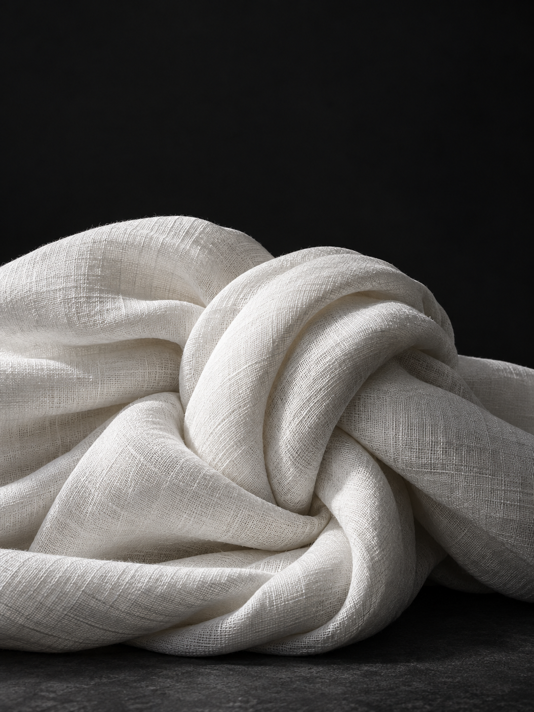
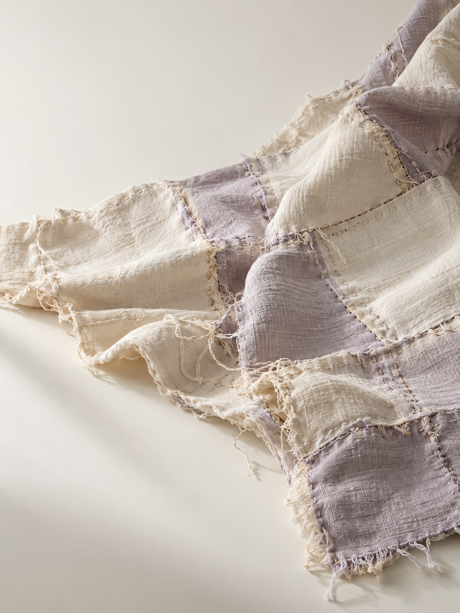

Lavender / on paper
CSS token
EKO / The living identity
A shared identity for the storefront and its story. This board uses the same styles, fonts, colors, components and SVG wordmark.
Archetype: Lover, expressed as emotional depth, tenderness and human connection.
Voice: Personal, sincere and understated.
Audience: Everyday wearers, especially students and adults 18–40, seeking meaning in simplicity. This is an audience hypothesis.
Promise: A simple shirt that stands for the strength you carry.
Shared SVG proposal shown large, at navigation size, and reversed from one-color artwork. Final logo review remains open.
CSS token
CSS token
CSS token
CSS token
CSS token
CSS token
Deep lavender gives display type contrast on paper; pale lavender is used on dark backgrounds. Lavender belongs to typography and interface accents. The shirt, fabric illustration and garment stitching remain white.
Display / Georgia · oversized, tightly set · italic lavender emphasis
Body / IBM Plex Sans
There is strength in continuing. In making room for hope. In being human.
Controls use the storefront’s component styles. Size selection and the temporary demo bag stay on the main page.

Use directional light, neutral shadows and generous crops. A centered shirt, dark knotted-fabric chapter and conceptual quilt form the three-part opening; a fine lavender thread connects their stories. Garments stay entirely white: no colored overlays, prints or logos. Lavender is reserved for type and interface accents. The abstract fabric is an AI-generated mood study, not evidence of the shirt’s material or construction.
A single fine lavender line follows the entire storefront, from the opening chapters through the close-up, lotus, product and footer. It is decorative, never a navigation control. Keep the shirt white; ivory and lavender patchwork belongs only to the remembrance illustration.

The “Why white” chapter fills the section edge to edge with a bird’s-eye botanical image. White petals echo the garment, while green lily pads and dark water belong to the photograph. White serif type sits immediately beside a smaller lotus over a dark gradient. On phones the headline stays beside the flower, with body copy below. This is AI-generated concept imagery, not a product-material claim.
Scroll-linked close-ups reveal the neckline, sleeve and hem shown in the concept image. A Pause motion control and system reduced-motion preferences provide a static view. No interior or back view, fabric specification or performance claim is supplied.
The story explores unseen burdens and shared humanity. The historical section links to the National AIDS Memorial for the AIDS Memorial Quilt’s history. Its ivory and lavender patchwork illustration is conceptual, not an archival image or an endorsement of EKO.
The shirt remains a demo: no orders, payments, accounts or persistence. The same working typography and wordmark are shared with the storefront.